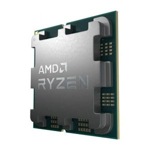

İşlemci ne işe yarar?

Nedir?
Bilgisayarın "beyni" olarak kabul edilir. İşletim sisteminden ve uygulamalardan gelen tüm komutları, matematiksel ve mantıksal işlemleri saniyeler içinde çözerek bilgisayarın temel işlemlerini gerçekleştirir
İşlemcinin Çalışma Döngüsü (Instruction Cycle)

- Getir (Fetch): Komut, ana bellekten (RAM) alınır ve işlemciye getirilir.
- Çöz (Decode): Kontrol Birimi (CU), bu komutun ne anlama geldiğini çözer (örneğin: toplama mı, veri kopyalama mı?).
- Uygula (Execute): Komut ALU veya ilgili birim tarafından çalıştırılır ve sonuç kaydedilir.